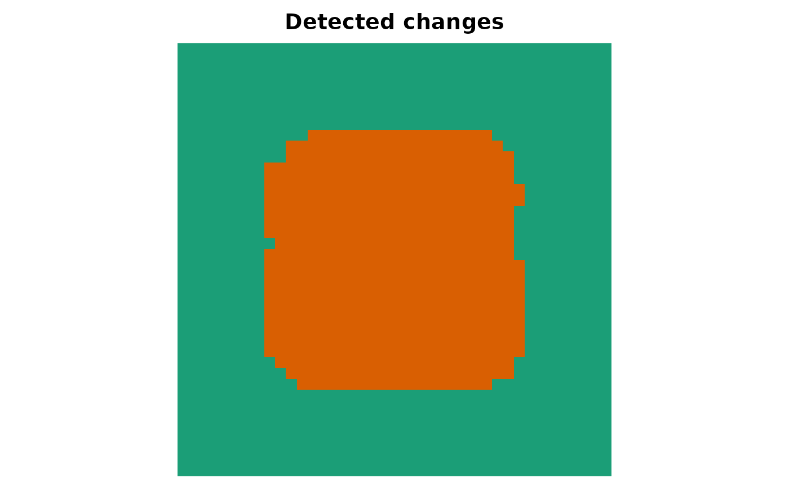

Applies the entropy test of entropy_test() pixel by pixel, using the
observations of a moving window in two co-registered images, and returns
the map of p-values and the binary change map.
Usage
change_map(
image1,
image2,
model = c("gamma", "g0i", "ggamma", "wishart", "g0p"),
window = 5,
L = NULL,
channel = 1,
level = 0.01
)Arguments
- image1, image2
Co-registered images (SARImage objects or arrays) of the same size.
- model
One of
"gamma","g0i","ggamma"(intensity models, applied to each channel) or"wishart","g0p"(matrix models, for PolSAR images).- window
Odd side of the moving window.
- L
Known number of looks. If
NULL(default) it is estimated in every window.- channel
Channel used by intensity models.
- level
Significance level used to declare a change.
Value
A list of class sitsar_change with the matrices statistic,
p_value and change (logical), and the level.
Examples
set.seed(1)
a <- matrix(rgammasar(40 * 40, mu = 1, L = 4), 40)
b <- a
b[11:30, 11:30] <- rgammasar(400, mu = 4, L = 4)
cd <- change_map(a, b, model = "gamma", window = 5, L = 4)
cd
#> <Entropy-based change map> model: gamma | level: 0.01
#> size: 40 x 40
#> changed pixels: 543 (33.94%)
plot_map(cd$change, main = "Detected changes")
